Метод ітерацій
Нехай дано рівняння (1), де  - неперервна функція. Для знаходження дійсних коренів цього рівняння, замінимо його рівносильним: . (6)
- неперервна функція. Для знаходження дійсних коренів цього рівняння, замінимо його рівносильним: . (6)
Виберемо яким-небудь способом «грубе» наближення кореня  і підставемо його у праву частину рівняння (6). Отримаємо деяке число
і підставемо його у праву частину рівняння (6). Отримаємо деяке число
(7)
Підставивши тепер у праву рівності (7) замість число , отримає нове число . Повторивши цей процес, приходимо до послідовності чисел
(n = 1,2,3,…) (8)
Ця послідовність може бути як збіжною, так і розбіжною. Якщо послідовність (8) – збіжна, а функція  - неперервна, то границя послідовності (8) буде коренем рівняння (6). Дійсно нехай 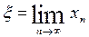.
- неперервна, то границя послідовності (8) буде коренем рівняння (6). Дійсно нехай 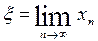.
Перейдемо до границь у рівності (8)
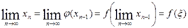
Тобто має місце рівності .
Як видно з малюнка 3 (випадки в, г), застосування методу ітерації може і не привести до уточнення кореня. Про достатню умову збіжності ітераційного процесу говорить така теорема.
Теорема 3. Нехай рівняння (6) має єдиний корінь на відрізку і виконуються такі умови.
і виконуються такі умови.
1)  визначена і диференційована на відрізку
визначена і диференційована на відрізку  ;
;
2) 

 для всіх 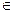
для всіх 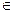  ;
;
3) Існує таке дійсне число q що  для всіх
для всіх 

 .
.
Тоді ітераційна послідовність (8) збігається при будь-якому початковому наближенню 
 .
.
Згідно з теореми 3 послідовність (8) збігається до кореня  із швидкості геометричної прогресії із знаменником q. Чим менше число q тим швидше збігається послідовність (8) (тобто, тим менше кроків потрібно виконати, щоб досягти наближеного значення кореня із наперед заданою похибкою). Швидкість збіжності послідовності залежить також і від вибору початкового наближення
із швидкості геометричної прогресії із знаменником q. Чим менше число q тим швидше збігається послідовність (8) (тобто, тим менше кроків потрібно виконати, щоб досягти наближеного значення кореня із наперед заданою похибкою). Швидкість збіжності послідовності залежить також і від вибору початкового наближення  . Чим ближче до кореня 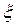.
. Чим ближче до кореня 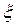.
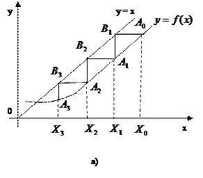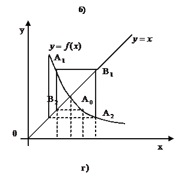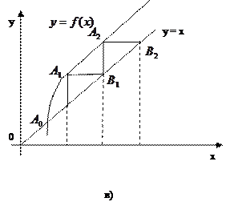
Вибрано , тим швидше буде знайдено результат. При виконанні умов теореми 3 (мал.3, випадки а,б ) метод ітерацій збіжний при будь-якому виборі, початкового наближення  з
з  . Завдяки цьому він є само виправним, тобто, окрема помилка в обчисленнях, яка не виводить за межі відрізка
. Завдяки цьому він є само виправним, тобто, окрема помилка в обчисленнях, яка не виводить за межі відрізка  , не впливає на кінцевий результат. Властивість самовиправлення робить метод ітерацій одним із найнадійніших методів наближень.
, не впливає на кінцевий результат. Властивість самовиправлення робить метод ітерацій одним із найнадійніших методів наближень.
Оцінка наближень .
Геометрично спосіб ітерацій можна пояснити так (мал.3). Побудуємо на площині х0у графік функцій у = х та  . Кожен корінь
. Кожен корінь  рівняння (6) є абсцисою точки перетину М кривої
рівняння (6) є абсцисою точки перетину М кривої  з прямою у = х.
з прямою у = х.
Йдучи від деякої точки 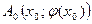, будуємо ламану лінію частини якої почергово паралельні або осі 0х, або осі 0у, вершини 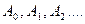 лежать на кривій  , а вершини - на прямій у = х. Спільні абсциси точок очевидно, будуть послідовними наближеннями кореня х.
, а вершини - на прямій у = х. Спільні абсциси точок очевидно, будуть послідовними наближеннями кореня х.
На мал.3 зображено випадки а) 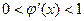; б) 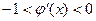; в) ; г) .
На завершення зауважимо, що умови теореми 3 не є необхідним. Це означає, що ітераційна послідовність може виявитись збіжною і тоді коли ці умови не виконуються.
Рівняння (1) зводиться у рівносильне рівняння (6) так, щоб в околі кореня  виконувалися нерівність (9). Розглянемо деякі загальні прийоми такого перетворення.
виконувалися нерівність (9). Розглянемо деякі загальні прийоми такого перетворення.
Нехай корінь  рівняння (1) лежить на відрізку
рівняння (1) лежить на відрізку  .
.
Замінимо рівняння (1) рівносильним йому рівнянням
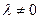 (10)
Підберемо сталу так, щоб в околі  кореня
кореня  виконувалася нерівність 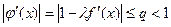
виконувалася нерівність 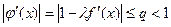
Звідси маємо
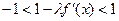 або 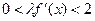
Якщо знак  на
на  не змінюється, то стала повинна мати однаковий знак з і задовольняти умову
не змінюється, то стала повинна мати однаковий знак з і задовольняти умову
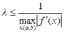
При такому виборі  нерівність (9) виконуватиметься.
нерівність (9) виконуватиметься.
Іноді рівняння (1) замінюють рівносильним йому рівнянням
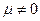
Сталу  вибирають так, щоб в околі
вибирають так, щоб в околі  кореня
кореня  справджувалася нерівність 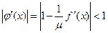, тобто виконувалися умови: 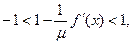 або 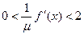
справджувалася нерівність 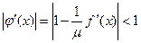, тобто виконувалися умови: 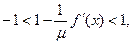 або 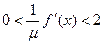
Остання подвійна нерівність виконуватиметься, коли 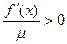 і 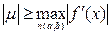
Таким чином, якщо на відрізку  функція
функція  зберігає знак і обмежена, то завжди можна вказати число
зберігає знак і обмежена, то завжди можна вказати число  того самого знака, що й
того самого знака, що й  , яке задовольнятиме нерівності (11) і цим самим забезпечуватиме виконання нерівності (9) для рівняння (10).
, яке задовольнятиме нерівності (11) і цим самим забезпечуватиме виконання нерівності (9) для рівняння (10).
Якщо рівняння (1) таке, що в околі  кореня
кореня  має місце нерівність то ітераційний процес буде розбіжним. У цьому випадкові, таке рівняння замінюють рівносильним йому рівнянням де - функція, обернена до . Для останнього рівняння метод ітерацій буде збіжним, оскільки 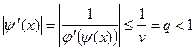.
має місце нерівність то ітераційний процес буде розбіжним. У цьому випадкові, таке рівняння замінюють рівносильним йому рівнянням де - функція, обернена до . Для останнього рівняння метод ітерацій буде збіжним, оскільки 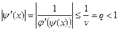.
Оцінка наближень .
Геометрично спосіб ітерацій можна пояснити так (мал.3). Побудуємо на площині х0у графік функцій у = х та  . Кожен корінь
. Кожен корінь  рівняння (6) є абсцисою точки перетину М кривої
рівняння (6) є абсцисою точки перетину М кривої  з прямою у = х.
з прямою у = х.
Йдучи від деякої точки , будуємо ламану лінію частини якої почергово паралельні або осі 0х, або осі 0у, вершини лежать на кривій , а вершини - на прямій у = х. Спільні абсциси точок очевидно, будуть послідовними наближеннями кореня х.
На мал.3 зображено випадки а) ; б) ; в) ; г) .
На завершення зауважимо, що умови теореми 3 не є необхідним. Це означає, що ітераційна послідовність може виявитись збіжною і тоді коли ці умови не виконуються.
Рівняння (1) зводиться у рівносильне рівняння (6) так, щоб в околі кореня  виконувалися нерівність (9). Розглянемо деякі загальні прийоми такого перетворення.
виконувалися нерівність (9). Розглянемо деякі загальні прийоми такого перетворення.
Нехай корінь  рівняння (1) лежить на відрізку
рівняння (1) лежить на відрізку  .
.
Замінимо рівняння (1) рівносильним йому рівнянням
(10)
Підберемо сталу  так, щоб в околі 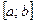 кореня
так, щоб в околі 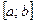 кореня  виконувалася нерівність
виконувалася нерівність
Звідси маємо
або
Якщо знак  на
на  не змінюється, то стала
не змінюється, то стала  повинна мати однаковий знак з
повинна мати однаковий знак з  і задовольняти умову
і задовольняти умову
При такому виборі  нерівність (9) виконуватиметься.
нерівність (9) виконуватиметься.
Іноді рівняння (1) замінюють рівносильним йому рівнянням
Сталу вибирають так, щоб в околі  кореня
кореня  справджувалася нерівність , тобто виконувалися умови: або
справджувалася нерівність , тобто виконувалися умови: або
Остання подвійна нерівність виконуватиметься, коли і
Таким чином, якщо на відрізку  функція зберігає знак і обмежена, то завжди можна вказати число того самого знака, що й
функція зберігає знак і обмежена, то завжди можна вказати число того самого знака, що й  , яке задовольнятиме нерівності (11) і цим самим забезпечуватиме виконання нерівності (9) для рівняння (10).
, яке задовольнятиме нерівності (11) і цим самим забезпечуватиме виконання нерівності (9) для рівняння (10).
Якщо рівняння (1) таке, що в околі  кореня
кореня  має місце нерівність то ітераційний процес буде розбіжним. У цьому випадкові, таке рівняння замінюють рівносильним йому рівнянням де - функція, обернена до . Для останнього рівняння метод ітерацій буде збіжним, оскільки .
має місце нерівність то ітераційний процес буде розбіжним. У цьому випадкові, таке рівняння замінюють рівносильним йому рівнянням де - функція, обернена до . Для останнього рівняння метод ітерацій буде збіжним, оскільки .